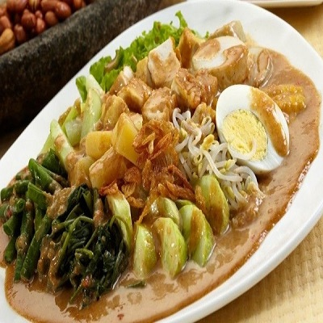
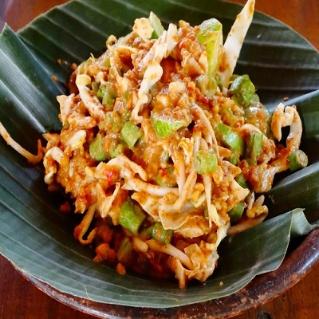
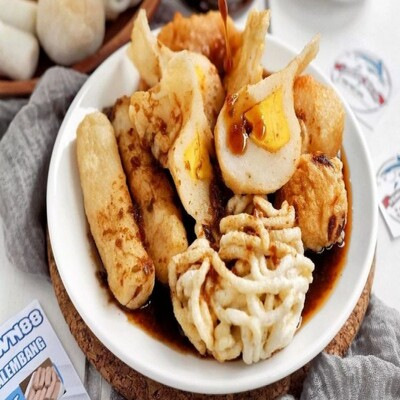

- All
- Sayur
- Ayam
- Seafood
- Daging

Gado - Gado
Rp. 25.000,00
Gado-gado adalah makanan khas Jakarta berisi sayur-sayuran yang direbus, irisan telur dan tahu, serta ditaburi bawang goreng dan kerupuk. Sayur-sayuran ditambahkan dengan bumbu kacang atau saus dari kacang tanah yang telah dihaluskan yang kemudian diaduk merata.
Sayur Asem
Rp. 25.000,00
Sayur asem adalah masakan sejenis sayur yang khas Indonesia. Sayur asem kami berisi kacang panjang, jagung manis, labu, kacang tanah, melinjo, terung, nangka, jagung manis, daun melinjo.
Ayam Asam Manis
Rp. 30.000,00
Ayam Asam Manis. Ayam yang memiliki rasa asam dan manis.
Cah Kangkung
Rp. 300.000,00
Kangkung yang di cah.

Sapi Lada Hitam
Rp. 50.000,00
Sapi bumbu lada hitam.
Gurame Asam Manis
Rp. 4.000.000,00
Gurame Asam Manis.

Karedok
Rp. 6.000.000.000,00

Rujak
Rp. 100.000,00
Bakso
Rp. 35.000,00
